String基本特性
- String字符串使用一对
""表示； - String类为final的，不可被继承；
- String实现了Serializable接口，可序列化；实现了Comparable接口，表示可比较；
- JDK8及之前，String内部使用char[]存储字符串数据；JDK9之后使用byte[]；
- 字符串常量池中不会存储相同内容的字符串。
因为String是final的，所以它是不可变的，String的不可变性体现在：当字符串重新赋值、拼接操作和调用String的replace()方法修改制定字符时，都需要重新指定内存区域赋值，不能使用原有的value进行赋值。比如：
1 | public class StringTest { |
通过字面量的方式（区别于new）给一个字符串赋值，此时的字符串值声明在字符串常量池中：
1 | public class StringTest { |
a和b都指向字符串常量池中唯一一份hello（因为字符串常量池中不会存储相同内容的字符串），可以使用debug证明：
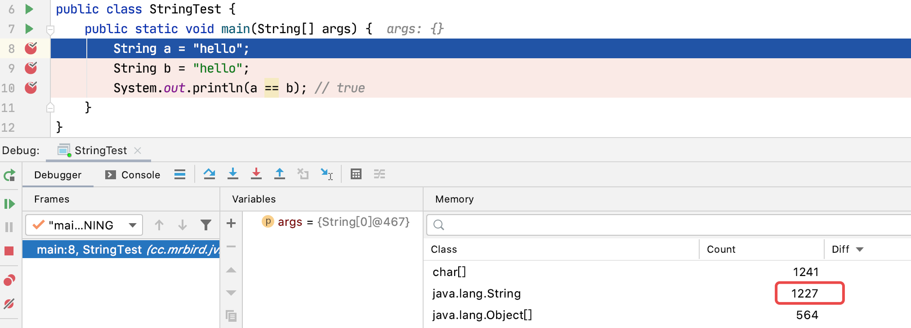
可以看到，代码还未执行String a = "hello"时，堆内存中String的个数为1227；
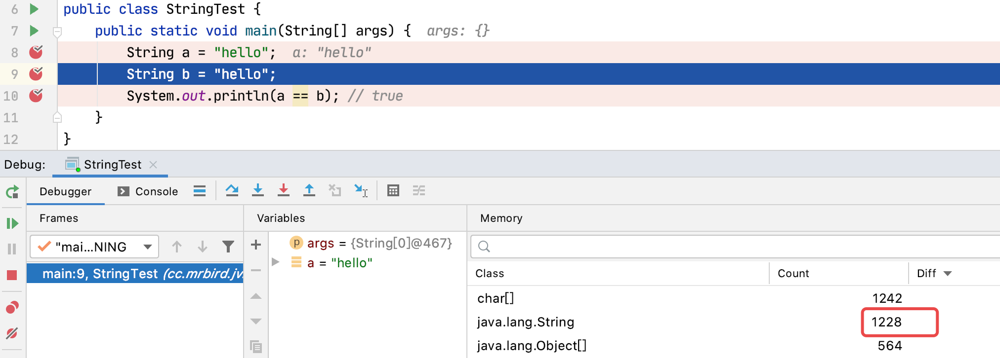
执行完String a = "hello"时，堆内存中String的个数为1228；
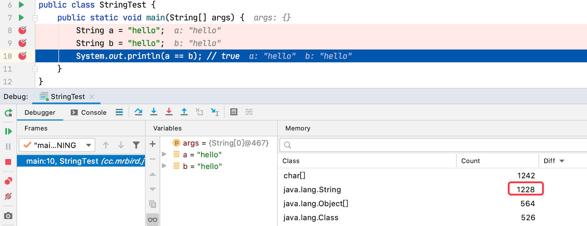
执行完String b = "hello"时，堆内存中String的个数还是为1228。
字符串常量池（StringTable）是一个固定大小的Hashtable，可以使用-XX:StringTableSize设置长度：
jdk6时，StringTable的长度是固定的，为1009。这个值不是很大，所以当池中String过多时，会造成Hash冲突，导致链表变长，性能下降；
jdk7时，StringTable的默认长度是60013；
- jdk8时，1009是可设置的最小值。
String内存分配
在jdk6及之前，字符串常量池存放在永久代（方法区）；jdk7开始至今，字符串常量池存放在堆内存中。
比如：
1 | public class StringTest { |
这个例子在jdk6中，设置参数：-XX:PermSize=6m -XX:MaxPermSize=6m -Xms6m -Xmx6m，运行结果如下：
1 | Exception in thread "main" java.lang.OutOfMemoryError: PermGen space |
证明了jdk6中，字符串常量池存放在永久代。
在jdk8中，设置参数：-XX:MetaspaceSize=6m -XX:MaxMetaspaceSize=10m -Xms6m -Xmx6m，运行结果如下：
1 | Exception in thread "main" java.lang.OutOfMemoryError: Java heap space |
证明了jdk8中，字符串常量池存放在堆中。
String拼接操作
字符串拼接操作主要分为以下两种：
- 常量与常量的拼接结果放在常量池，编译期会进行优化；
- 只要拼接一方有一个是变量，结果就在堆中，内部使用StringBuilder拼接。
举几个字符串拼接的例子：
字面量拼接（属于常量拼接）：
1 | public class StringTest { |
使用IDEA查看对应的class文件可以发下，编译器将其优化为了如下结果：
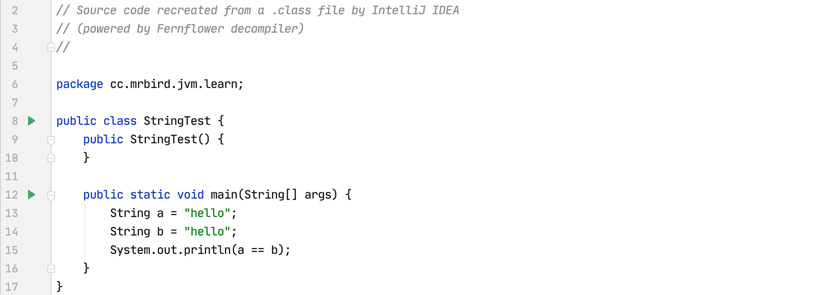
变量a的声明编译器优化为了String a = "hello"，所以a、b指向的是字符串常量池中的同一个对象，故a == b为true。
拼接方包含变量：
1 | public class StringTest { |
可以看到，只要字符串拼接一方包含变量，结果都是在堆中；a为字符串常量池中的javascript的引用，d为堆中value为javascript的String对象的引用，所以a == d为false，下面以此类推。
通过字节码指令也可以证明，String d = b + "script"内部使用StringBuilder拼接：
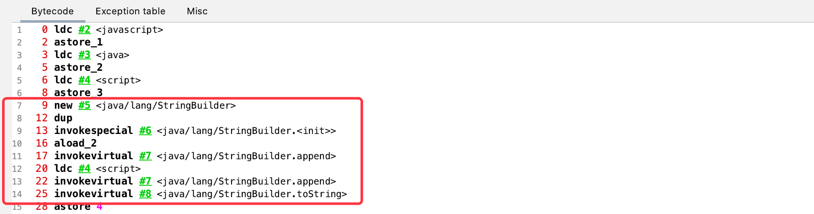
所以String d = b + "script"相当于new StringBuilder().append(b).append("script").toString()。查看StringBuilder的toString()方法：
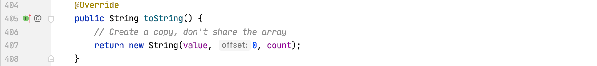
所以d实际指向的是StringBuilder的toString()方法里new String()创建的对象地址。
再来看个拼接例子：
1 | public class StringTest { |
因为b是final的，不是“变量”，所以这种情况实际上也是常量与常量的拼接，编译器会进行优化：
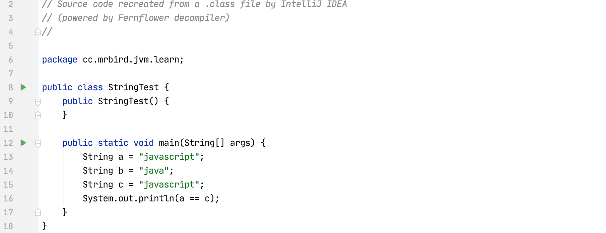
StringBuilder与String拼接性能对比
当涉及多次字符串拼接操作时，无论是编程规范还是IDEA都会提示我们使用StringBuilder而非手动使用+拼接，因为前者不仅性能更优而且更省内存。
举个例子：
1 | public class StringTest { |
使用JProfiler查看内存占用情况：
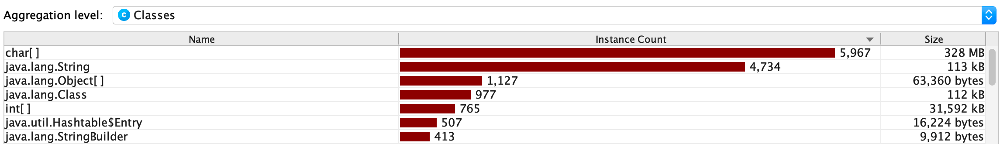
通过前面的内容我们知道，在循环体中，我们实际是创建了100000个StringBuilder对象和100000个String对象。
现在我们将拼接操作改为StringBuilder：
1 | public class StringTest { |
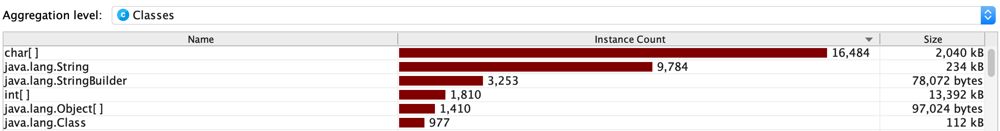
可以看到无论是内存占用还是耗时，使用StringBuilder远优于String手动拼接，这是因为使用StringBuilder的方式自始至终只创建过一个StringBuilder对象。
查看StringBuilder的空参构造器：
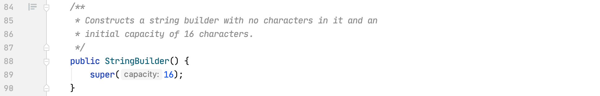
内部调用了父类的有参构造器：
所以当我们调用new StringBuilder()时，实际上创建的是一个长度为16的char型数组。查看StringBuilder的append方法：
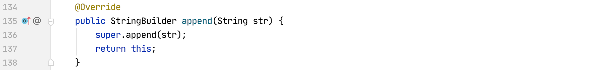
查看父类的append方法：
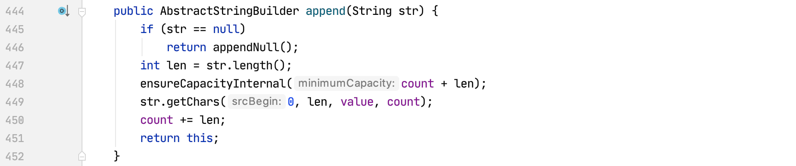
可以看到内部涉及到数组扩容的操作，所以当我们使用StringBuilder的时候，如果能够确定最终字符串的长度，我们可以在创建StringBuilder的时候使用有参构造器来指定容量，这样可以避免后期的扩容耗时。
总结：多次字符串拼接操作推荐使用StringBuilder（线程安全使用StringBuffer），最好指定容量。
intern()方法
intern()方法简单来说就是在字符串常量池中添加指定字符串。在不同版本jdk中有不同的表现，总结如下：
在jdk6中，将指定字符串对象尝试放入到常量池。
- 如果常量池中有，则不会放入，返回常量池中已有的对象的地址；
- 如果常量池中没有，则会将当前字符串对象复制一份，然后将复制的放入常量池，并返回常量池中该对象的地址。
在jdk7及之后版本，将指定字符串对象尝试放入到常量池。
- 如果常量池中有，则不会放入，返回常量池中已有的对象地址；
- 如果常量池中没有，则会把当前字符串对象的引用地址复制一份放入常量池中，并返回常量池中该引用地址。
可以看到在不同版本中，intern()方法最主要的区别在于当常量池中没有指定对象时的操作。
在举例intern()方法的使用前，我们先看看下面这两个例子：
例一：
1 | public class StringTest { |
上面main方法中，创建了几个对象？
查看字节码：
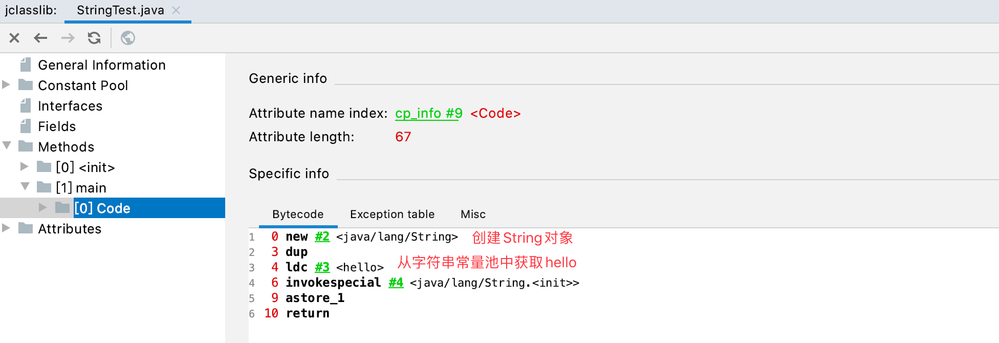
所以上面实际上是创建了两个对象，一个是堆中通过new关键字创建的String对象；一个是字符串常量池中的hello。
例二：
1 | public class StringTest { |
上面main方法中，创建了几个对象？
通过上面我们知道new String("hello")和new String("world")操作创建了四个对象，并且变量拼接内部实际用的是StringBuilder，所以上面还额外创建了一个StringBuilder对象。使用StringBuilder的append方法后，最终调用了StringBuilder的toString方法，该方法内部又创建了一个String对象。所以上面main方法中实际创建了6个对象：
- new StringBuilder()；
- new String(“hello”)；
- 常量池中的”hello”；
- new String(“world”)；
- 常量池中的”world”；
- toString方法内部创建的new String(“helloworld”)。
查看上面代码的字节码也可以证明：
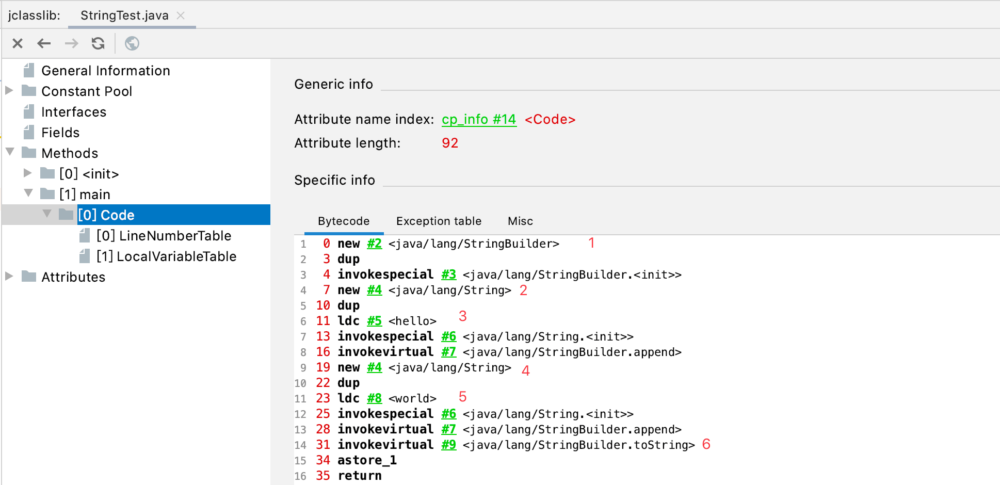
此外需要明确的一点是：上面代码中，并没有在常量池中创建”helloworld”！！！查看StringBuilder的toString方法的字节码：
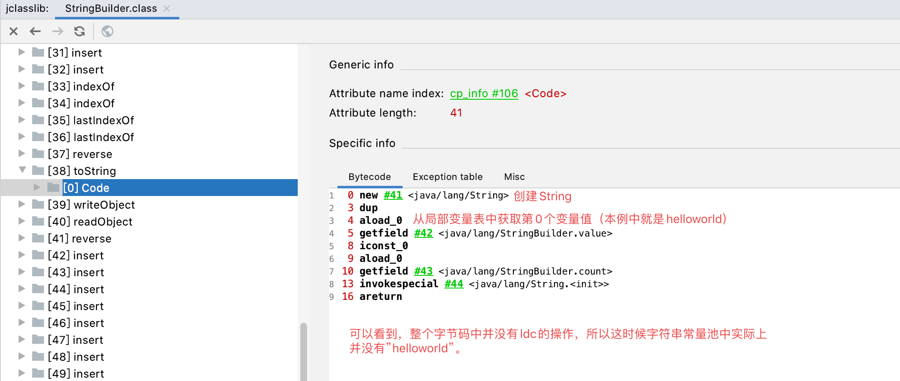
有了这两个例子的储备后，我们就可以举几个intern()方法的例子了：
例一：
1 | public class StringTest { |
上面例子无论是jdk6还是jdk7及以后的版本都返回false。String a = new String("hello");代码执行后，堆中通过new创建了一个String(“hello”)对象，字符串常量池中存在”hello”。当执行a.intern()代码时，由于字符串常量池中已经包含”hello”，所以直接返回”hello”的地址。
例二：
1 | public class StringTest { |
上面例子，在jdk6中返回false，jdk7及之后返回true。String c = new String("java") + new String("script")代码执行后，字符串常量池中并没有”javascript”。通过前面的介绍我们知道，当字符串常量池中没有目标字符串时，不同版本jdk调用intern()方法内部操作细节不同：
jdk6时：常量池中没有”javascript”，则会将当前字符串对象复制一份，然后将复制的放入常量池，并返回常量池中该对象的地址，如下图所示：
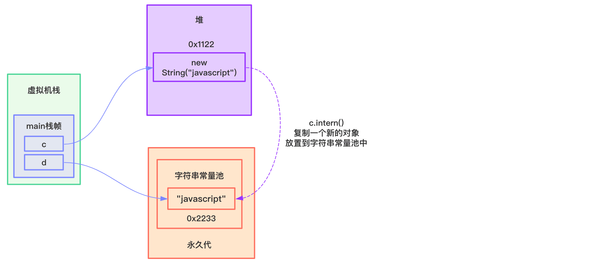
c和d指向的地址不同，所以返回false。
jdk7及之后：常量池中没有”javascript”，则会把当前字符串对象的引用地址复制一份放入常量池中，并返回常量池中该引用地址，如下图所示：
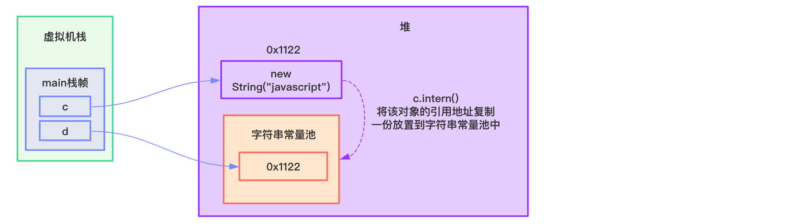
c和d指向的地址是一样的，所以返回true。
下面再举几个例子供大家思考🤔：
1 | public class StringTest { |